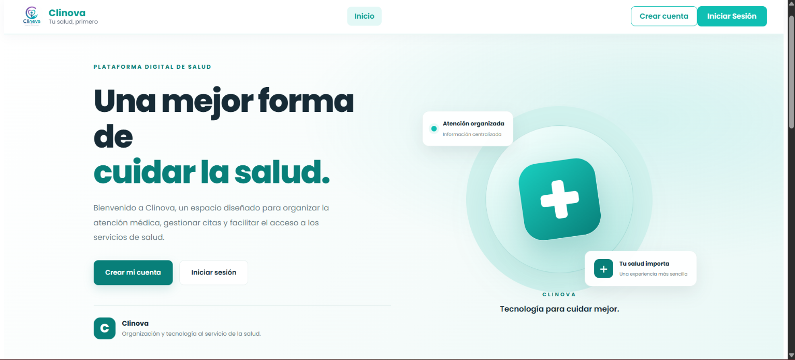

Clinova
Sistema web de gestión clínica que permite administrar pacientes, médicos, citas y diferentes procesos de atención médica desde una plataforma digital.
Explorar proyecto
¿Qué es Clinova?
Clinova es un sistema web de gestión clínica desarrollado como proyecto académico de Ingeniería Informática.
Su objetivo es facilitar la administración de información médica y optimizar procesos relacionados con pacientes, profesionales de salud y citas médicas.
El sistema utiliza Angular para el frontend, Spring Boot para el backend y PostgreSQL para el almacenamiento de información.
Cuenta con diferentes módulos conectados mediante servicios REST, permitiendo organizar la información desde una interfaz moderna y responsive.
Información del proyecto
Módulos del sistema
Clinova integra diferentes funcionalidades para la administración de procesos clínicos.
Gestión de pacientes
Registro, consulta y actualización de la información de los pacientes.
Gestión de médicos
Administración de profesionales de salud y sus especialidades.
Citas médicas
Registro, programación y gestión de citas entre pacientes y médicos.
Historias clínicas
Registro y consulta de información clínica relacionada con la atención de los pacientes.
Facturación
Gestión de facturas y seguimiento de estados de pago.
Usuarios y roles
Acceso al sistema mediante diferentes roles, como administrador, médico y recepcionista.
Tecnologías utilizadas
Herramientas utilizadas para conectar la interfaz, la lógica del sistema y la base de datos.
Angular
Desarrollo de la interfaz web, componentes, formularios y comunicación con el backend.
Spring Boot
Desarrollo de servicios REST, lógica de negocio y conexión con la base de datos.
PostgreSQL
Almacenamiento y gestión de la información del sistema mediante una base de datos relacional.
¿Quieres conocer más proyectos?
Explora otros proyectos y tecnologías que he utilizado en desarrollo web.
Ver mis proyectos